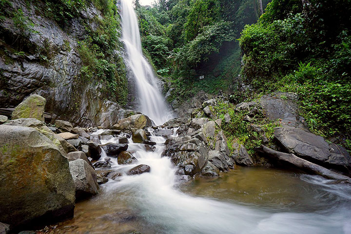

<!DOCTYPE html>
<html lang="en">
<head>
    <meta charset="UTF-8">
    <meta name="viewport" content="width=device-width, initial-scale=1.0">
    <title>Quiz 1 - Tourist Spot</title>
</head>
<body>
    
</body>
</html><!DOCTYPE html>
<html>
<head>
    <meta charset="utf-8">
    <title>Muhammad Rafly Abdillah's Hometown</title>
    <link rel="stylesheet" type="text/css" href="../style.css">
<html>
    <header>
        <meta charset=""utf-8>
        <title>Web Programming Quiz 1</title>
        <h1>Muhammad Rafly Abdillah's Hometown</h1>
        <nav>
            <ul>
                <li><a href="../quiz1.html">Homepage</a></li>
                <li><a href="profile.html">Profile</a></li>
                <li><a href="hometown.html">Hometown</a></li>
                <li><a href="food.html">Food</a></li>
                <li><a href="tourism.html">Tourism</a></li>
            </ul>
        </nav>
    </header>

    <main>
        <div id="content">
            <h2 id="Origin">Brief Profile of My Hometown's Tourism Sites</h2>
            <figure>
            
            <figcaption>Curug Cigentis in Mekar Buana, Tegalwaru, Karawang</figcaption>
            </figure>
            <p>
                Curug Cigentis is one of the more famous tourism spot in Karawang. Curug Cigentis is located in Mount Sanggabuana,
                Mekar Buana, Tegalwaru, Karawang, around 44 kilometers away from the central city. Curug Cigentis is in an elevation around 
                1000 meters above the water level. 
            </p>
            <p>
                Curug Cigentis is a network of waterfalls in the Mount Loji area. The area around this waterfalls is still untouched and 
                beautiful. The water is crystal clear and refreshing, with a gentle current. Large rocks surround Curug 
                Cigentis. According to local legend, Mount Sanggabuana had no water source in the past. When the Wali Songo came to 
                preach here, their prayers to Allah were answered and a spring appeared from a large rock, creating the waterfall.
            </p>
            <p>
                Beyond its stunning waterfall, Curug Cigentis offers a plethora of natural wonders. Visitors can explore the crystal-clear 
                river that flows beneath the falls or take a refreshing dip in the natural pools formed by the cascading waters. For those 
                seeking adventure, a trek to the waterfall's summit rewards with breathtaking panoramic views. Curug Cigentis is also a 
                sanctuary for diverse flora and fauna. Birdwatchers, butterfly enthusiasts, and anglers will delight in spotting various 
                species that call this place home. Photographers will find countless opportunities to capture the beauty of nature in 
                this idyllic setting.


            </p>
        </div>
    </main>
    <footer>
        Muhammad Rafly Abdillah @WebPro Quiz 1
    </footer>
</html>
